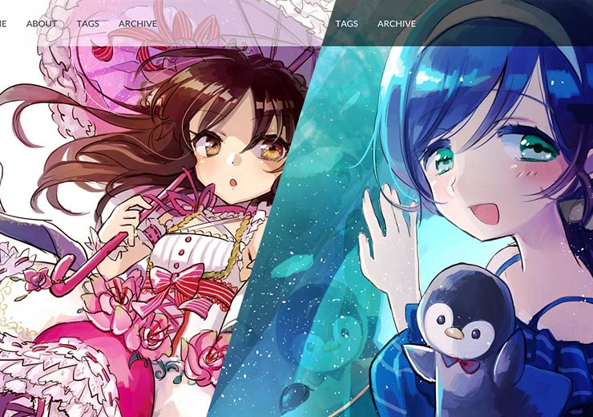
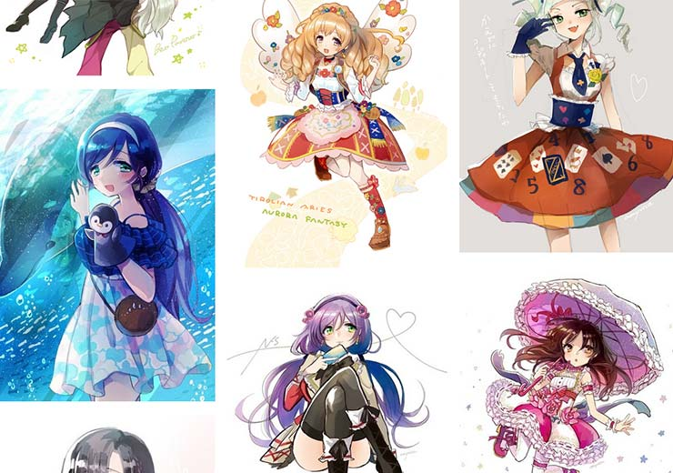
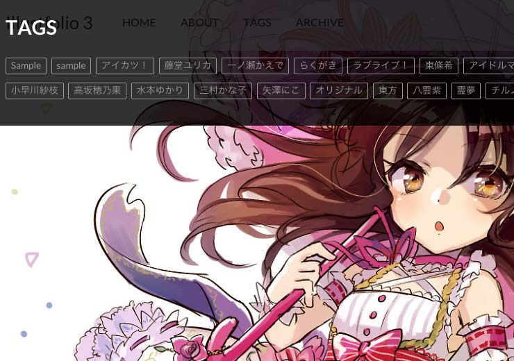

Features
Built for illustrators.
イラストレーターのために設計

カバー画像を着せ替えよう
トップページには、画面いっぱいにカバー画像を表示できます。ヘッダの色も白と黒から選べます。

無限にスクロール
ページ下部までスクロールすると、次のページを自動で読み込むので、イラストが次々と表示されます。

タグの一覧表示
ヘッダから、今までの投稿につけられたタグを一覧できます。特定のタグに絞って見たいときに便利です。
 ツイート
ツイート
 シェア
シェア
 ブックマーク
ブックマーク